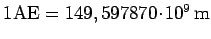
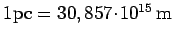
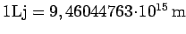
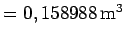
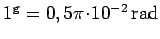
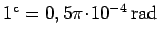
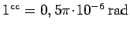
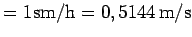
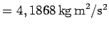
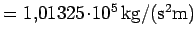

| Länge |
AE |
Astronomische Einheit |
 |
| |
pc |
Parsec |
 |
| |
Lj |
Lichtjahr |
 |
| |
Å |
Ångstrøm |
1 Å = |
| |
sm |
Internationale Seemeile |
1 sm = 1852 m |
| Volumen |
bbl |
Barrel |
1 bbl  |
| Ebener Winkel |
gon |
Neugrad |
 |
| |
|
Neuminute |
 |
| |
|
Neusekunde |
 |
| Geschwindigkeit |
kn |
Knoten |
1 kn  |
| Energie |
cal |
Kalorie |
1 cal  |
| Druck |
atm |
Phys. Atmosph. |
1 atm  |
Zu Einheiten, die gemäß EG-Richtlinie nur in einigen EG-Staaten zugelassen sind, s. 21.17.